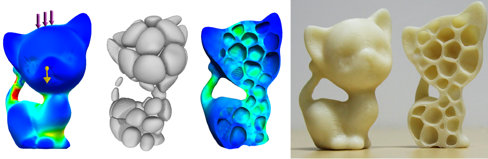

Lin Lu1
Andrei Sharf2
Haisen Zhao1 Yuan Wei1
Qingnan Fan1 Xuelin Chen1
Yann Savoye2 Changhe Tu1
Daniel Cohen-Or3
Baoquan Chen1
1Shandong University
2Ben-Gurion University
3Tel Aviv University
|  |
Figure 1: We reduce the material of a 3D kitten (left), by carving porous in the solid (mid-left), to yield a honeycomb-like interior structure which provides an optimal strength-to-weight ratio, and relieves the overall stress illustrated on a cross-section (mid-right). The 3D printed hollowed solid is built-to-last using our interior structure (right). |
Abstract: The emergence of low-cost 3D printers steers the investigation of new geometric problems that control the quality of the fabricated object. In this paper, we present a method to reduce the material cost and weight of a given object while providing a durable printed model that is resistant to impact and external forces.
We introduce a hollowing optimization algorithm based on the
concept of honeycomb-cells structure. Honeycombs structures are
known to be of minimal material cost while providing strength
in tension. We utilize the Voronoi diagram to compute irregular
honeycomb-like volume tessellations which define the inner struc
ture. We formulate our problem as a strength-to-weight optimiza
tion and cast it as mutually finding an optimal interior tessellation
and its maximal hollowing subject to relieve the interior stress.
Thus, our system allows to build-to-last 3D printed objects with
large control over their strength-to-weight ratio and easily model
various interior structures. We demonstrate our method on a collection
of 3D objects from different categories. Furthermore, we
evaluate our method by printing our hollowed models and measure
their stress and weights.
@ARTICLE{Lu:2014,
author = {Lin Lu, Andrei Sharf, Haisen Zhao, Yuan Wei, Qingnan Fan, Xuelin Chen, Yann Savoye, Changhe Tu, Daniel Cohen-Or, Baoquan Chen},
title = {Build-to-Last: Strength to Weight 3D Printed Objects},
journal = {ACM Trans. Graph. (Proc. SIGGRAPH)},
year = {2014},
month = {August},
volume = {33},
number = {4},
pages = {97:1--97:10},
}